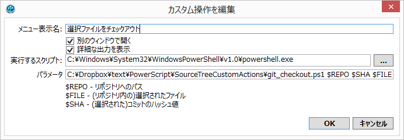

カスタム操作スクリプトとは？
SourceTreeのGUIだけではどうしても事足りない場合があると思います。その際にはターミナルアイコンクリックすると表示される黒い画面でgitコマンド入力することになると思います。しかし、毎回毎回コマンド入力するのは面倒に感じます。(少なくとも私は) そこで "ターミナルでgitコマンド入力・実行" に相当することをGUIでマウスクリックでお手軽操作したいときにカスタム操作スクリプトを作成します。
前提条件
- SourceTreeの内臓GitではなくシステムGitが使われていること。
- PowerShellがインストールされていること。
設定方法
[ツール]→[オプション]メニュー選択で開くオプションダイアログの[カスタム操作]タブでスクリプト登録を行います。
- メニュー表示名： カスタム操作名称。
- 別のウィンドウで開く: チェック入れる。
- 詳細な出力を表示: チェック入れる。
- 実行するスクリプト: powershell.exeのフルパスを指定する。 (スクリプトのパスではない)
- パラメータ: スクリプトフルパスとスクリプトに渡すパラメーター。「<スクリプトフルパス> $REPO $SHA $FILE」ような感じ。